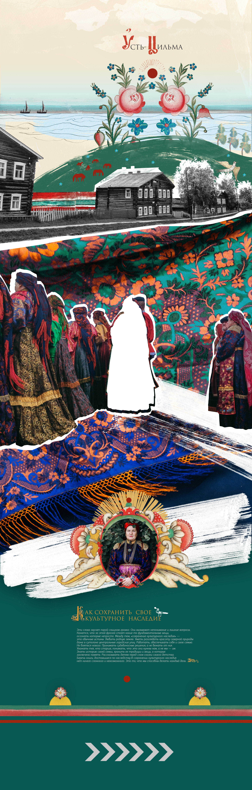
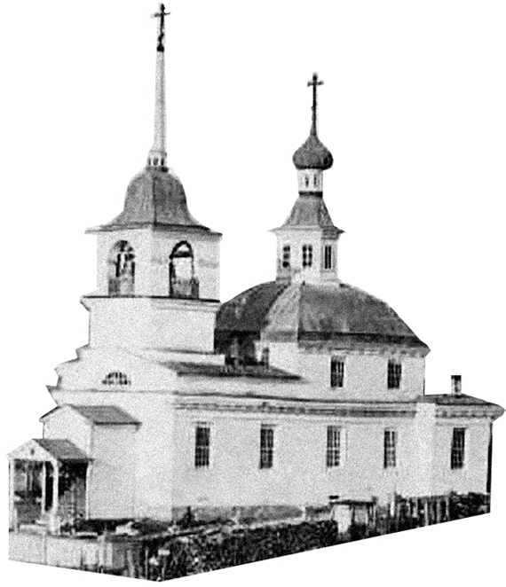
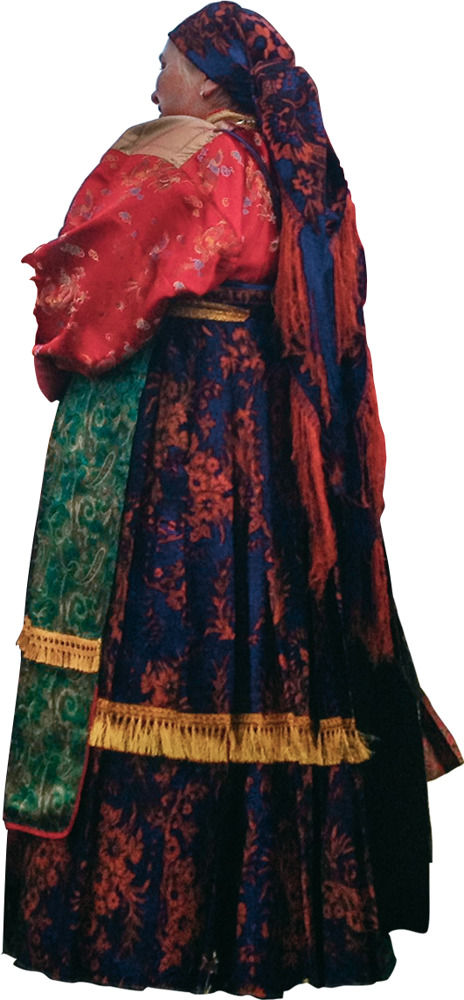
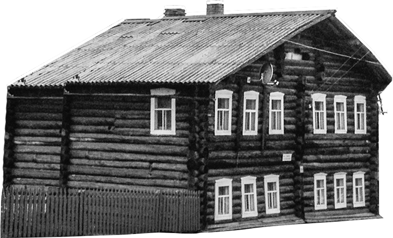
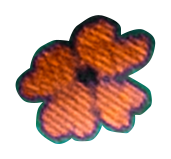

XСтраница загружается...
 Подождите
Подождите

Усть-Цильма
Усть-Цильма — одно из самых древних сел Европейского севера. Знаменита как Русский Север, заповедный край, который сохранил до наших дней архаические пласты культуры старообрядцев.
Церковь Николы-Чудотворца была построена в 1547 году, в XX столетии сгорела вместе с деревней при пожаре.">
Старообрядческий
надгробный памятник
Старообрядческий крест представляет собой деревянный столбик с двускатной 'крышей', под которой иногда распологается икона или крест. Символически — это дом умершего человека.">
Горка
Гуляние «Усть-Цилемская Горка» — это весенне-летний обрядовый праздник. Люди собираются за деревней на возвышенности, горке, и встречают солнце с песнями и хороводами. С давних времен праздник «Горка» символизирует вершину трудового года.">
Село Усть-Цильма
Усть-Цильма расположена на берегу реки Печоры и её притоков — Цильмы и Пижмы. Большинство жителей обитают в традиционных для русского Севера больших домах-дворах, где под одной крышей располагается и жилая часть, и скотный двор.
В анимации использован фрагмент картины “Усть-Цильма” (1969 г.). Автор Ермолин Рем Николаевич.">
Ткани
Купцы привозили с далеких краев новые ткани и платки, пуговицы и нитки, из которых усть-цилемки шили свои праздничные наряды. В сундуке каждой женщины и девушки были одежи из шелка, штофа, парчи, украшенные драгоцеными нитями из серебра и золота.
Село Усть-Цильма расположено на берегу реки Печора и ее притоков (Цильмы и Ижмы). Основным промыслом жителей является рыболовство, в водах рек они ловили красную и белую рыбу. Приезжие купцы на кораблях доставляли свои товары и во время праздника «Горка» раскидывали торговые палатки и открывали ярмарку">